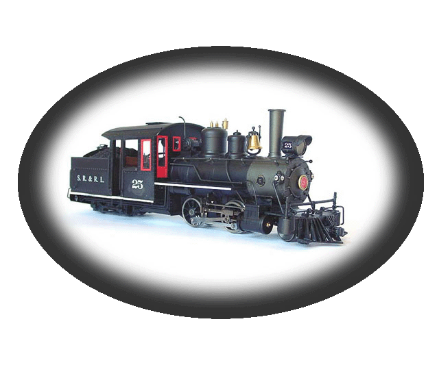

All Diesel drawings are from The
Railroad Paintshop
used by permission.

Welcome to
29n2 scale
A new scale for model railroading.

Friday, May 14th,
2004
Rochester, NY
Im reading the
forums at mylargescale.com
(I hang out there
all the time)
another thread
about multiple scales on G-gauge track is being discussed.
Some of us get
into a discussion about modeling Maine 2-footers on G Gauge track.
(this is known
as 7/8n2 scale, and has a small
but devoted following.)
well, if you model
2-foot gauge on g-gauge (45mm) track, and want track that
LOOKS like 2-foot
track, your Aristocraft SD45's are going to look very strange
on that track!
;)
or conversely,
if your track looks like standard gauge track, then your 7/8n2 models will
look
all wrong on that
track!
to me, track is
a model too, and it should "fit the part".
What if you wanted
to model Maine 2-foot gauge and standard gauge both..but at the SAME SCALE?!
well..you could
use your G-gauge track to represent the 2-footers..build huge models of
Maine cars
and engines in
7/8n2 scale,
then maybe use
the big 4.75" gauge trains to represent standard gauge!
could be done..but
very expensive!
well..what if you
wanted to keep all your 1/29 scale steamers and diesels, and also model
maine 2-footers
in 1/29 scale?? so everything is to the same scale?
hmmm! interesting....what
size track would you need?
(24 inch track)
X (25.4) = 609.6mm
(609.6mm) diveded
by (29) = 21mm
is there an already
existing model railroad track close to 21mm??
YES! S-scale! 22mm!!
:) only 1mm difference!
(technically, S-scale
track works out to 25" in 1/29 scale)
and why 1/29 for
the standard gauge?
because that has
become the mainstay of Large Scale SG models.
yes 1/32 is technically
correct, not 1/29.
but..since I dont
ever plan to own much 1/32 trains, and will probably have a ton of 1/29,
I chose 1/29 as
my scale..
so yes, both my
2-foot and my standard gauge will both be running on track is *slightly*
of incorrect gauge!
but thats fine
with me..
the differences
will be virtually invisible.
and..the real key
here is all the trains are of the SAME scale!
thats the really
important factor to me.
I considered calling
this new scale An2 ... or maybe Xn2?
both the "A" and
the "X" designation have been suggested for 1/29 scale..
but then I thought
"29n2" made the most sense..
it tells you the
scale, 1/29, and the "n2" stands for "narrow 2-foot" gauge!
makes sense to
me..
I really like 7/8n2
scale!
(modeling 2-foot
gauge on "G gauge" 45mm track)
thats 1/13.7 scale.
I would love to
model in that scale..and still might.
but the models
are HUGE!!!
massively huge.
the difference
between 1/13.7 scale and 1/29 scale is gigantic..
there is really
no way no way the 2 scales can visually co-exist on the same
track, or the same
garden railroad, and look reasonable..(unless you just go for the "who
cares!" mindset!
which is totally
valid..)
but if you want
them to look "good" or realistic together, you really can't model
both on the same
gauge track.
Here is a Maine
Forney and a SD45 both running on 45mm track.
the Maine forney
is 7/8n2 scale, and the SD45 is 1/29 scale.
both would operate
on the same track.
All Diesel drawings are from The
Railroad Paintshop
used by permission.
Notice anything
wrong?!
wow! hugely different
scales.
Our lovely model
Deb is 6' tall.
In 7/8n2 thats
5.25 inches.
In 1/29 thats 2.5
inches!
now..what happens
if we model both engines to the SAME SCALE?
this is how they
would look..
(and this is also
the same proportion the 2 locomotives would have been
in real-life, both
at 1/1. )

And here they are
full-size for 1/29 scale.

And
here is the side view of both locomotives at the same scale.


And..since
a SD45 and a Portland forney don't really go together..
how
about a Maine Central standard gauge Pacific
with
the 2' forney? both to the same scale.
(something
close to the Aristocraft Pacific in size.)
opps..I
couldnt find a good pacific drawing..
so
here is a 10-wheeler instead.
but
this is still very close in size to the Aristo pacific,
drivers
almost the same size..and it represents a small-ish
standard
gauge engine that ran alongside the real Maine 2-footers.

(SRRR #1 image from Gary
Kohler collection, used by permission)
Here
are a few photos that really capture the "feel" of the Maine 2-footers.


Background image of KCRR #2, and image of SRRR#1, is ©
Gary Kohler collection, used by permission. Maine
2-foot Quarterly
(I added in the F-unit to the background image!)
Scot Lawrence.
Page started May 2004.
sscotsman@yahoo.com